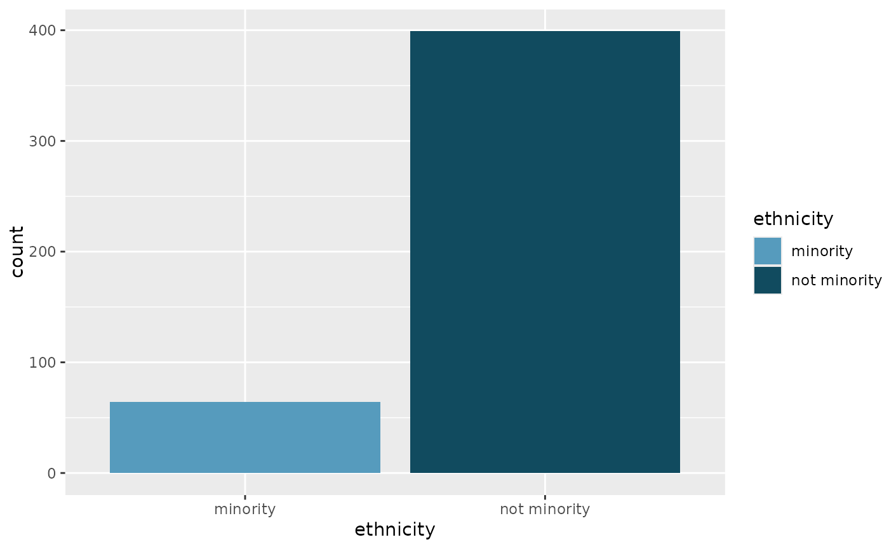
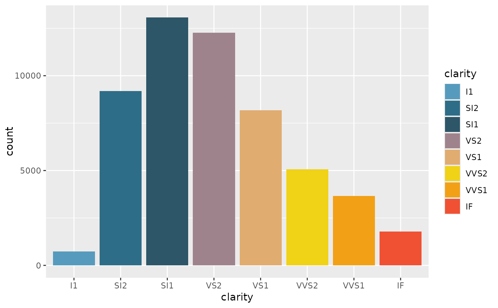
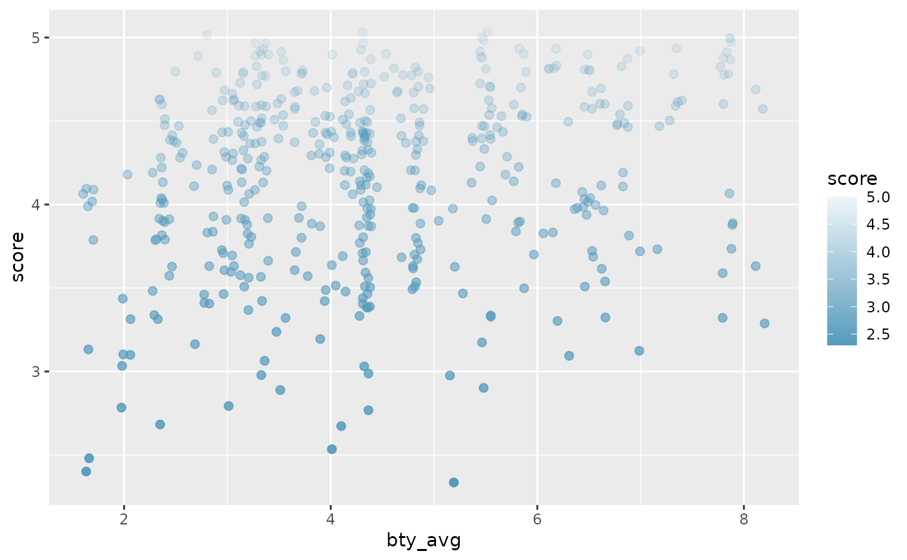
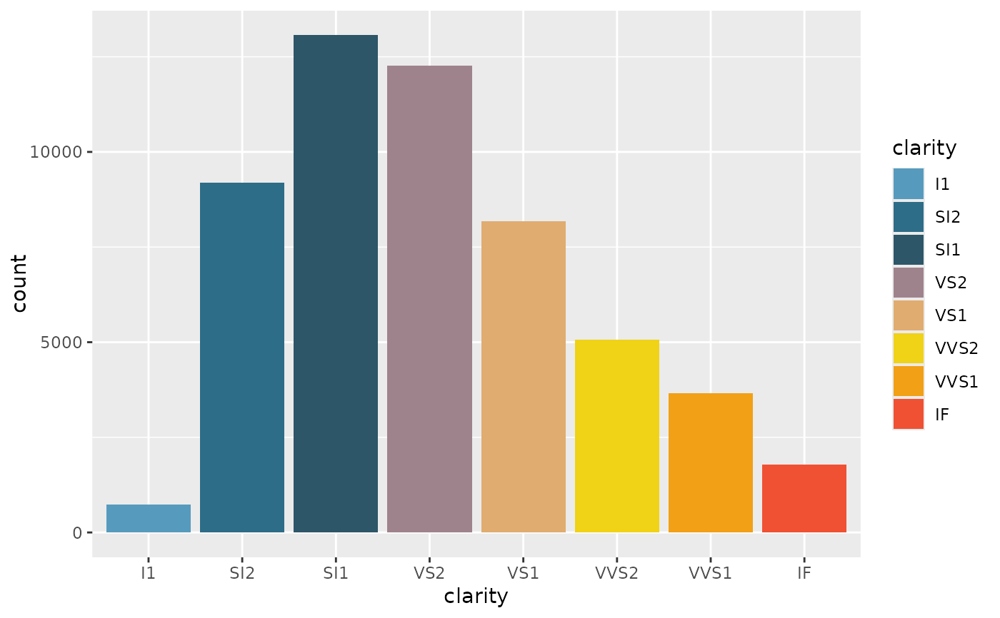
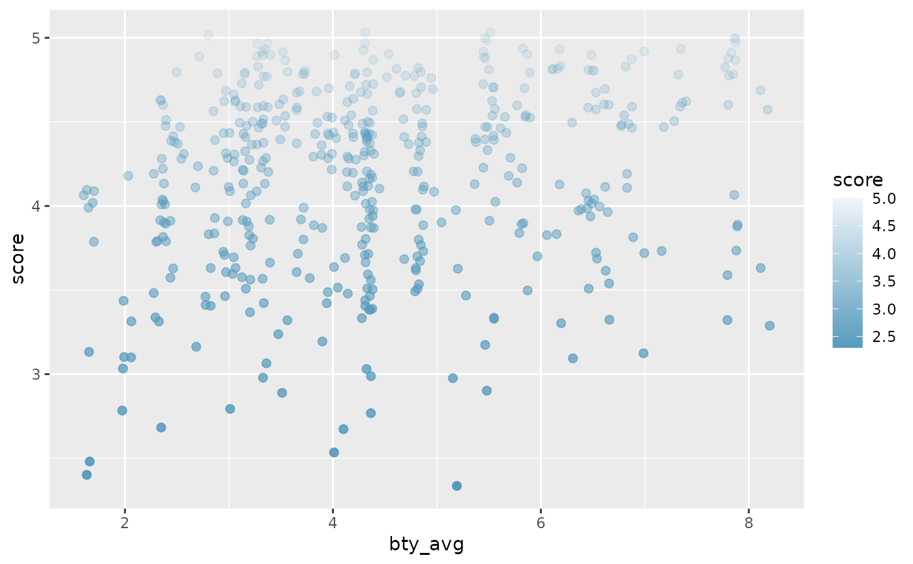

Fill scale constructor for OpenIntro IMS colors
scale_fill_openintro(palette = "main", discrete = TRUE, reverse = FALSE, ...)Arguments
- palette
Character name of palette in openintro_palettes
- discrete
Boolean indicating whether color aesthetic is discrete or not
- reverse
Boolean indicating whether the palette should be reversed
- ...
Additional arguments passed to
ggplot2::discrete_scale()orggplot2::scale_fill_gradientn(), used respectively when discrete is TRUE or FALSE
Examples
library(ggplot2)
library(dplyr)
# Categorical variable with two levels
ggplot(evals, aes(x = ethnicity, fill = ethnicity)) +
geom_bar() +
scale_fill_openintro("two")

# Categorical variable with three levels
ggplot(evals, aes(x = rank, fill = rank)) +
geom_bar() +
scale_fill_openintro("three")
 # Continuous variable with levels
# Generates a palette, but may not be the best palette
# in terms of color-blind and grayscale friendliness
ggplot(diamonds, aes(x = clarity, fill = clarity)) +
geom_bar() +
scale_fill_openintro()

# For continuous palettes
# use scale_color_gradient instead
ggplot(evals, aes(x = bty_avg, y = score,
color = score)) +
geom_jitter(size = 2) +
scale_color_gradient(low = IMSCOL["blue", "full"], high = IMSCOL["blue", "f6"])

ggplot(evals, aes(x = bty_avg, y = score,
color = cls_perc_eval)) +
geom_jitter(size = 2) +
scale_color_gradient(low = IMSCOL["green", "full"], high = IMSCOL["green", "f6"])
# Continuous variable with levels
# Generates a palette, but may not be the best palette
# in terms of color-blind and grayscale friendliness
ggplot(diamonds, aes(x = clarity, fill = clarity)) +
geom_bar() +
scale_fill_openintro()

# For continuous palettes
# use scale_color_gradient instead
ggplot(evals, aes(x = bty_avg, y = score,
color = score)) +
geom_jitter(size = 2) +
scale_color_gradient(low = IMSCOL["blue", "full"], high = IMSCOL["blue", "f6"])

ggplot(evals, aes(x = bty_avg, y = score,
color = cls_perc_eval)) +
geom_jitter(size = 2) +
scale_color_gradient(low = IMSCOL["green", "full"], high = IMSCOL["green", "f6"])